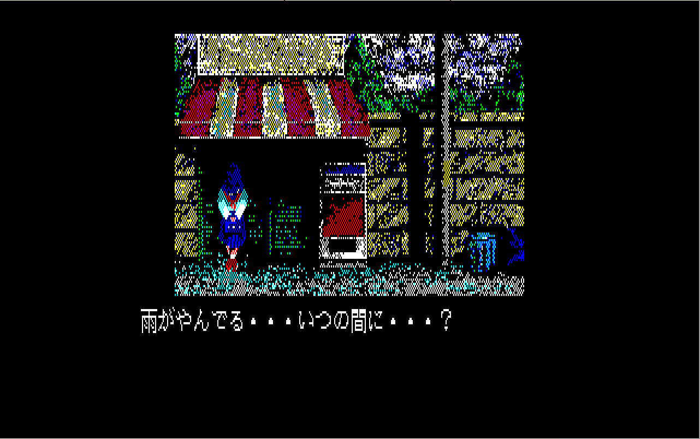
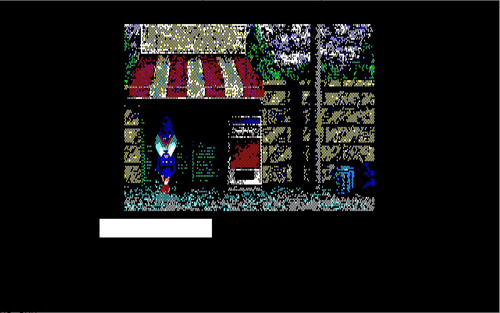
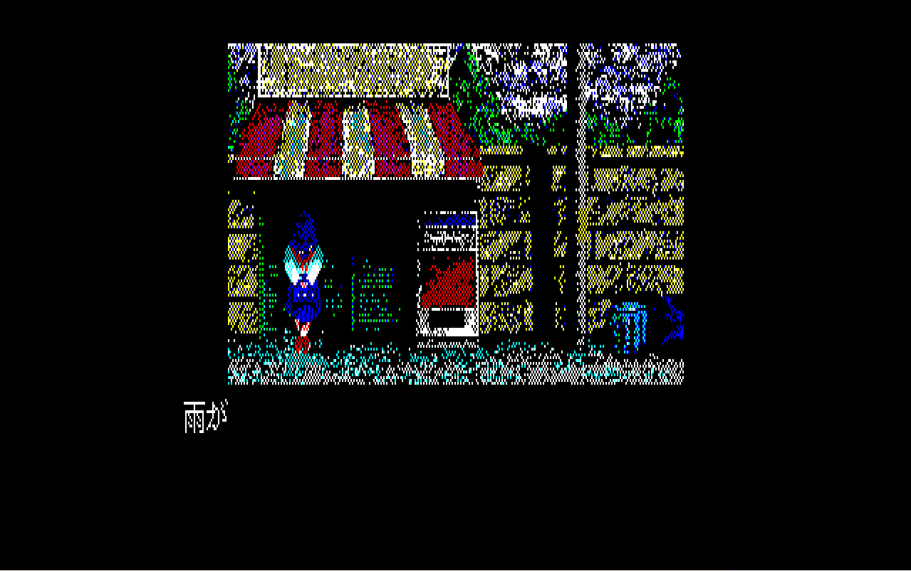
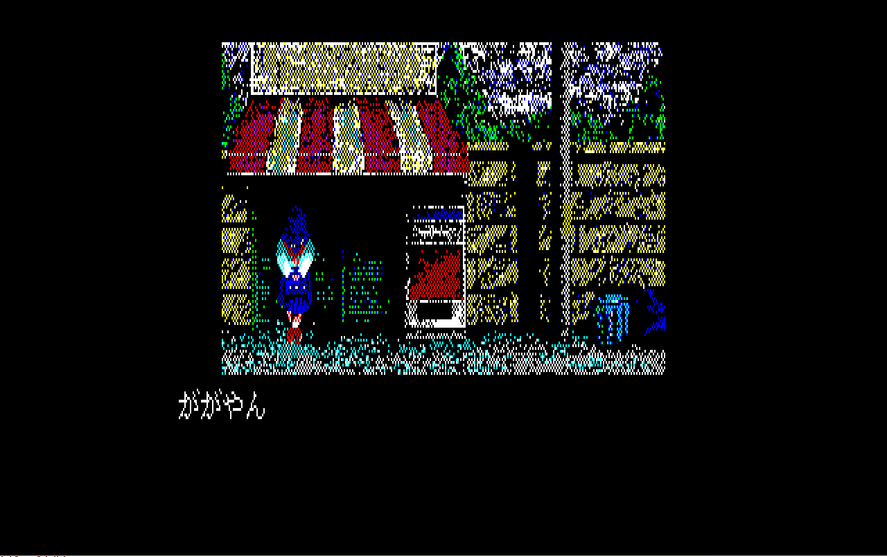

《몽환전사 바리스》의 첫 이벤트에서 한 글자를 따라 Script Token → 문자 출력 Code → Kanji ROM → 화면까지 실제 실행 근거로 연결합니다.
제작 중 · 강좌 뼈대
화면의 글자에서 Script까지 거슬러 올라간다
5부에서 배운 것은 주소를 미리 아는 것이 아니라, 화면 관찰로 질문을 정하고 현재 실행값에서 다음 조사 위치를 찾는 방법이었습니다. 6부에서는 타이틀 로고가 아닌 실제 일본어 대사 한 줄에 같은 절차를 적용합니다.
먼저 Kanji ROM을 사용하는 장면인지 비교하고, 강제 Monitor 진입 뒤 Stack의 반환 주소·Script 처리기·문자 렌더러를 연결합니다. 마지막에는 Script Token 변경과 Font bitmap 변경을 서로 다른 실험으로 검증합니다.
QUASI88 0.7.4이벤트 1: 雨がやんでる・・・실측 로그 1~10 확보Font 실험 11~13 대기
실제 Monitor 출력은 원문 그대로 기록합니다. 전체 원문 로그에서도 명령과 출력 순서를 확인할 수 있습니다.
화면 비교강제 BreakStackScriptToken 분기Kanji I/OGlyph 기록두 가지 치환 검증
01 · COMPARE THE SCREENS
일본어 글자는 어디에 저장되어 있을까?
5부에서는 화면에 나타난 그림을 출발점으로 실행 중인 Code를 조사했습니다. 이번에는 그림 대신 대사 한 줄을 조사합니다. 화면에 일본어 글자가 나타날 때 게임은 대사 데이터만 읽는 것이 아니라, 각 글자를 어떤 점으로 그려야 하는지도 알아야 합니다. 이때 글자의 모양을 나타내는 점 무늬를 Glyph(글리프), 이러한 글리프를 모아 둔 데이터를 Font(글꼴)라고 합니다.
PC-88 게임의 일본어가 모두 같은 방식으로 출력되는 것은 아닙니다. 게임이 자체적으로 글꼴 데이터를 가지고 있을 수도 있고, PC-88이 제공하는 KANJI1.ROM의 글자 모양을 읽어 사용할 수도 있습니다. 따라서 디버거로 주소를 찾기 전에 지금 분석할 장면이 어느 쪽에 해당하는지부터 조사합니다.
왜 ROM을 제거한 화면과 비교하는가?
원본 화면만 보면 대사와 배경이 같은 방식으로 출력되는지 알 수 없습니다. 그래서 다른 조건은 그대로 두고 Kanji ROM만 사용하지 못하게 하는 비교 실험을 합니다. 원본 ROM을 백업한 뒤 에뮬레이터가 사용하는 ROM 파일을 임시로 치우고, QUASI88을 완전히 종료했다가 같은 게임·같은 장면으로 다시 시작합니다. 비교가 끝나면 반드시 ROM을 복원합니다.
이 실험은 KANJI1.ROM 하나만 제거했다고 생각해도 에뮬레이터가 다른 이름의 ROM을 대신 읽거나 이미 적재한 데이터를 사용할 수 있으므로, 화면 비교 결과와 실제 실행 중의 ROM 접근을 함께 확인해야 합니다.
01.PNG과 02.PNG — 한 가지 조건만 바꾸어 화면을 비교한다

01.PNG — 정상 상태. 원본 Kanji ROM을 사용하면 배경과 인물 위에 첫 이벤트 대사 「雨がやんでる・・・いつの間に・・・？」가 정상적으로 나타납니다. 이후 비교할 기준 화면입니다.

02.PNG — ROM 제거 후 재시작. 같은 장면에서 배경과 인물은 보이지만 일본어 대사는 정상적으로 나타나지 않습니다. 제거한 파일과 화면에서 달라진 요소를 직접 비교해 봅시다.
두 화면의 차이에서 무엇을 알 수 있는가?
첫 번째 화면에서는 배경·인물과 일본어 대사가 모두 보입니다. 두 번째 화면에서는 KANJI1.ROM을 사용하지 못하게 한 뒤에도 배경과 인물이 그대로 보이지만, 일본어 대사만 정상적으로 표시되지 않습니다. 만약 대사까지 게임의 배경 그림에 함께 그려 둔 것이라면 Kanji ROM을 제거해도 같은 모습으로 남아 있을 것입니다. 그런데 실제로는 대사 영역의 표시만 달라졌습니다.
따라서 이 장면의 일본어 대사는 배경 이미지와 별도로 출력되며, Kanji ROM의 글자 모양 데이터를 사용하고 있을 가능성이 높습니다. 이것이 화면 비교로 세운 첫 번째 가설입니다. 다만 화면만으로 내부 Code를 본 것은 아니므로 여기서 분석을 끝내지 않습니다. 뒤에서 실제 OUT (E8H)·OUT (E9H)와 IN (E8H)·IN (E9H)가 실행되는 것을 확인해 가설을 검증합니다.
관찰한 사실
ROM을 제거한 뒤에도 배경과 인물은 표시됐습니다. 반면 첫 이벤트의 일본어 대사는 정상 표시되지 않았습니다. 두 화면에서 바뀐 것은 대사 영역입니다.
이번 관찰에서 세운 가설
게임이 대사 데이터에서 문자값을 읽은 다음, 그 글자의 모양을 Kanji ROM에서 가져와 화면에 그리는 것일 수 있습니다. 이 가설을 실제 출력 Code로 확인하겠습니다.
03.PNG — 조사할 시점을 한 글자씩 좁힌다
글자 출력 경로를 처음부터 찾으려면 대사가 모두 나타난 화면보다 문자가 나타나는 도중에 게임을 멈추는 것이 좋습니다. 아래 화면에서는 첫 두 글자 「雨が」까지 표시됐습니다. 이 시점에서 QUASI88의 Monitor에 강제로 진입하여 CPU가 현재 무엇을 실행 중인지 확인합니다.

03.PNG — 조사 시작 시점. 첫 글자 하나가 아니라 「雨が」 두 글자가 표시된 뒤 정지한 화면입니다. 다음 단계에서 실제 PC와 Register를 읽습니다.
다음 질문: 글자가 화면에 나타난 지금, CPU는 어떤 Code를 실행하고 있는가? 먼저 현재 PC와 주변 명령을 확인하고, 그곳이 정말 출력 Code인지부터 판단합니다.
02 · BREAK AND OBSERVE
강제로 멈춘 PC를 문자 출력 코드라고 가정하지 않는다
강제로 Monitor에 들어오면 QUASI88은 현재 CPU의 Register와 실행 중인 명령을 표시합니다. 여기서 PC는 지금 실행하려는 명령의 주소입니다. 우리가 보고 싶은 것은 글자를 그리는 Code지만, 게임은 글자를 그린 뒤 잠시 기다리거나 다음 데이터를 처리하고 있을 수도 있습니다. 그러므로 화면에 글자가 보인다는 이유만으로 현재 PC를 문자 출력 주소라고 판단해서는 안 됩니다.
실제 로그에서는 PC=04BDh에 멈췄습니다. LD A,(0292H)는 메모리 0292h의 값을 A로 읽고, CP D는 A와 D를 비교합니다. JR C,04BDH는 A가 D보다 작은 동안 다시 같은 주소로 되돌아가는 명령입니다. 당시 A=09h, D=0Ah이므로 글자를 그리는 중이 아니라 일정한 값을 기다리는 반복 처리였다는 것을 알 수 있습니다.
화면에서 관찰「雨が」 두 글자가 이미 출력됐다.Monitor에서 확인PC=04BDh, A=09h, D=0Ah, HL=96A3h, SP=00FAh현재 판단화면에 글자는 나타났지만 CPU는 0292h를 검사하는 대기 루프를 실행 중이다.
QUASI88> reg
[MAIN]
AF:0993[S..H..NC] BC:0000 DE:0AD0 HL:96A3 IX:0000 PC:04BD I:00 IM:2 IFF:1
A':C47D[.Z.H.P.C] B':0000 D':0500 H':3E97 IY:E55C SP:00FA (ck=214400715)
04C1 38FA JR C,04BDH
\------> 04BD 3A9202 LD A,(0292H)
04C0 BA CP D
QUASI88> disasm #80
04BD 3A9202 LD A,(0292H)
04C0 BA CP D
04C1 38FA JR C,04BDH
04C3 AF XOR A
04C4 329202 LD (0292H),A
04C7 D1 POP DE
04C8 C9 RET
04C9 3ACD02 LD A,(02CDH)
04CC CB7F BIT 7,A
04CE 28F9 JR Z,04C9H
04D0 3ACD02 LD A,(02CDH)
04D3 CB7F BIT 7,A
04D5 20F9 JR NZ,04D0H
04D7 3ACD02 LD A,(02CDH)
04DA CB7F BIT 7,A
04DC 28F9 JR Z,04D7H
04DE D1 POP DE
04DF C9 RET
04E0 E5 PUSH HL
04E1 C5 PUSH BC
04E2 47 LD B,A
04E3 210010 LD HL,1000H
04E6 2B DEC HL
04E7 7D LD A,L
04E8 B4 OR H
04E9 C2E604 JP NZ,04E6H
04EC 10F5 DJNZ 04E3H
04EE C1 POP BC
04EF E1 POP HL
04F0 C9 RET
04F1 C9 RET
04F2 C9 RET
04F3 D9 EXX
04F4 210029 LD HL,2900H
04F7 D9 EXX
04F8 23 INC HL
04F9 7E LD A,(HL)
04FA 23 INC HL
04FB 46 LD B,(HL)
04FC FE01 CP 01H
04FE CA1205 JP Z,0512H
0501 FE02 CP 02H
0503 CA2305 JP Z,0523H
0506 FE03 CP 03H
0508 CA3405 JP Z,0534H
050B FE04 CP 04H
050D FE05 CP 05H
050F C3A304 JP 04A3H
0512 3E28 LD A,28H
0514 32F607 LD (07F6H),A
0517 E5 PUSH HL
0518 C5 PUSH BC
0519 CD4D08 CALL 084DH
051C C1 POP BC
051D 10F9 DJNZ 0518H
051F E1 POP HL
0520 C3A304 JP 04A3H
0523 3E28 LD A,28H
0525 32F607 LD (07F6H),A
0528 E5 PUSH HL
0529 C5 PUSH BC
052A CDE808 CALL 08E8H
052D C1 POP BC
052E 10F9 DJNZ 0529H
0530 E1 POP HL
0531 C3A304 JP 04A3H
0534 3E78 LD A,78H
0536 32A507 LD (07A5H),A
0539 E5 PUSH HL
053A C5 PUSH BC
053B CD9209 CALL 0992H
053E C1 POP BC
053F 10F9 DJNZ 053AH
0541 E1 POP HL
0542 C3A304 JP 04A3H
0545 C9 RET
0546 3E48 LD A,48H
0548 D332 OUT (32H),A
054A AF XOR A
054B D335 OUT (35H),A
QUASI88>
그렇다면 이 대기 처리가 끝난 뒤 CPU는 어디로 돌아갈까요? 현재 루틴을 호출한 곳을 찾으면 그 바로 앞에서 어떤 작업을 했는지 조사할 수 있습니다.
다음 단계에서는 RET 명령과 SP=00FAh에 주목합니다. RET는 Stack에 저장된 반환 주소로 돌아가는 명령이므로, 현재 상태를 유지한 채 Stack을 읽어 실제 호출자를 찾아보겠습니다.
03 · FIND THE CALLER
Stack에 남은 반환 주소로 이전 Code를 찾아간다
지금까지 확인한 사실은 현재 PC가 대기 루프라는 것입니다. 그렇다면 대기 루프가 끝나면 CPU는 어디로 돌아갈까요? Z80에서 CALL은 돌아올 주소를 Stack에 저장하고 다른 루틴으로 이동하며, RET은 그 주소를 꺼내 돌아갑니다. 다만 현재 루틴은 시작 부분에서 PUSH DE로 Register도 Stack에 보관했으므로 SP가 가리키는 첫 두 바이트를 무조건 반환 주소라고 읽으면 안 됩니다.
앞 단계에서 확인한 SP=00FAh부터 덤프해 보겠습니다. 덤프에 기록된 각 바이트를 어떤 순서로 읽어야 하는지 확인한 다음, 발견한 주소 주변을 disasm으로 조사합니다.
메모리 00FAh~00FBh의 D0 18은 04AEh에서 PUSH DE로 보관한 값입니다. 다음 00FCh~00FDh의 4F 04가 현재 CALL 04AEh의 반환 주소입니다. Z80은 16비트 값을 낮은 바이트부터 메모리에 놓으므로 4F 04를 044Fh로 읽습니다.
이제 044Fh 주변을 보면 0443 CALL 0B8Fh로 다른 루틴을 실행하고, 044C CALL 04AEh로 지금의 대기 루틴에 들어온 뒤, 044F JP 02E4h로 이동하는 순서가 보입니다. 이 순간에 0B8Fh의 정체를 외울 필요는 없습니다. 대기 전에 호출한 루틴이 문자 출력과 관련 있는지를 다음 로그에서 확인하면 됩니다.
실측 값SP=00FAh, 다음 반환 주소 044Fh호출 관계0443 CALL 0B8F → 044C CALL 04AE → 044F JP 02E4다음 질문02E4h로 돌아온 뒤, 다음 대사 Byte를 어디서 읽는가?
왜 저장된 DE가 18D0h인가?
뒤의 출력 루틴에서 행 하나를 읽을 때마다 INC DE가 실행되는 것을 확인합니다. 두 번째 문자 「が」의 시작값 18C0h에 16행을 더하면 18D0h입니다. 값의 차이를 Script 불일치로 단정하지 않습니다.
04 · SCRIPT READER
대기 루프를 빠져나와 다음 문자 데이터를 읽는 곳을 찾는다
앞 단계에서 찾은 044F JP 02E4h는 대기가 끝난 다음 이동할 주소입니다. 어떤 게임이든 문자를 한 번 출력하고 끝나는 것이 아니라, 이어지는 글자를 읽어 출력하는 과정을 반복해야 대사 한 문장이 완성됩니다. 따라서 02E4h 주변에 다음 글자의 데이터를 가져오는 Code가 있는지 조사합니다.
실제 disasm에 등장하는 HL은 이번 실행에서 Script가 저장된 RAM을 가리킵니다. LD E,(HL)은 그 주소의 바이트를 E에 읽어 오고, 곧이어 INC HL은 읽기 위치를 다음 바이트로 한 칸 옮깁니다. 이 두 명령을 발견하면 게임이 Script를 한 바이트씩 소비한다는 사실을 알 수 있습니다.
QUASI88> disasm 0x02E4 #48
02E4 3ACC02 LD A,(02CCH)
02E7 CB7F BIT 7,A
02E9 C8 RET Z
02EA AF XOR A
02EB D335 OUT (35H),A
02ED 5E LD E,(HL)
02EE 23 INC HL
02EF 7B LD A,E
02F0 32840C LD (0C84H),A
02F3 E60F AND 0FH
02F5 CAB803 JP Z,03B8H
02F8 FE01 CP 01H
02FA CA5204 JP Z,0452H
02FD FE02 CP 02H
02FF CA4203 JP Z,0342H
0302 FE03 CP 03H
0304 CAF304 JP Z,04F3H
0307 FE04 CP 04H
0309 CA7705 JP Z,0577H
030C FE05 CP 05H
030E CA1006 JP Z,0610H
0311 FE06 CP 06H
0313 CA0906 JP Z,0609H
0316 FE07 CP 07H
0318 CA0206 JP Z,0602H
031B FE08 CP 08H
031D CAB803 JP Z,03B8H
0320 FE09 CP 09H
0322 CA4605 JP Z,0546H
0325 FE0A CP 0AH
0327 CA9605 JP Z,0596H
032A FE0B CP 0BH
032C CA5B06 JP Z,065BH
032F FE0C CP 0CH
0331 CAF104 JP Z,04F1H
0334 FE0D CP 0DH
0336 CAF204 JP Z,04F2H
0339 FE0E CP 0EH
033B 3A840C LD A,(0C84H)
033E FE0F CP 0FH
0340 C8 RET Z
0341 C9 RET
0342 7B LD A,E
0343 E6F0 AND F0H
0345 5F LD E,A
0346 56 LD D,(HL)
0347 23 INC HL
0348 7E LD A,(HL)
QUASI88> disasm 0x04AE #20
04AE D5 PUSH DE
04AF 57 LD D,A
04B0 3ACD02 LD A,(02CDH)
04B3 CB7F BIT 7,A
04B5 2812 JR Z,04C9H
04B7 CB77 BIT 6,A
04B9 2002 JR NZ,04BDH
04BB 1600 LD D,00H
04BD 3A9202 LD A,(0292H)
04C0 BA CP D
04C1 38FA JR C,04BDH
04C3 AF XOR A
04C4 329202 LD (0292H),A
04C7 D1 POP DE
04C8 C9 RET
04C9 3ACD02 LD A,(02CDH)
04CC CB7F BIT 7,A
04CE 28F9 JR Z,04C9H
04D0 3ACD02 LD A,(02CDH)
04D3 CB7F BIT 7,A
QUASI88>
현재 HL=96A3h이고 0C84h=C8h입니다. 이 값이 무엇을 뜻하는지 실제 RAM 덤프와 비교해 봅시다. 969Fh부터는 B8 62 C8 18 48 38 ...이 놓여 있습니다. 화면에는 이미 「雨が」가 보이므로 처음 네 바이트 B8 62 / C8 18이 각각 앞의 두 글자에 대응하는지 확인할 수 있습니다. 두 글자를 처리한 뒤의 주소는 969Fh+4=96A3h이며, 실제 HL과 일치합니다.
또한 LD (0C84H),A는 읽어 온 첫 바이트를 별도로 보관합니다. 다음의 AND 0FH는 그 바이트의 하위 네 비트만 남기고, 뒤따르는 CP와 JP는 이 값에 따라 서로 다른 처리 위치를 선택합니다. 이렇게 Script 바이트를 읽고 종류에 따라 처리 위치를 고르는 Code를 이번 실습에서는 Script 처리기라고 부르겠습니다.
주소
실제 Byte
장면의 문자
다음 HL
969Fh
B8 62
雨
96A1h
96A1h
C8 18
が
96A3h
96A3h
48 38
や — 다음 출력 대상
96A5h
Script의 문자값과 ROM의 주소는 다른 값이다
여기서 본 B8 62는 바리스 1의 Script 안에서 「雨」를 나타낸 실제 두 바이트입니다. 이를 일본어 표준 문자 코드인 JIS나 ROM 파일의 위치라고 바로 해석하면 안 됩니다. 다음 단계에서 B8 62가 실제로 어떤 값으로 바뀌어 Kanji ROM에 전달되는지 Code를 읽어 확인합니다. 이번 장면의 문자 처리 경로를 찾았다고 해서 아직 전체 제어 Token의 길이와 의미까지 알아낸 것은 아닙니다.
05 · TRACE TOKEN BRANCH
두 바이트가 어떻게 글리프를 읽는 주소로 바뀌는지 따라간다
Script에서 B8을 읽은 뒤 하위 네 비트를 검사하면 08h가 남습니다. 실제 분기표의 031B CP 08H와 031D JP Z,03B8H에 따라 03B8h로 이동합니다. 이제 이 주소부터 무엇을 하는지 읽어 보면, 앞 단계에서 발견한 Script 값이 문자 출력 루틴에 전달되기까지의 과정을 알 수 있습니다.
AND F0H는 E에 남아 있는 첫 바이트의 하위 네 비트를 지웁니다. 이어 LD D,(HL)은 Script의 두 번째 바이트를 D에 읽고 INC HL로 다음 Script 위치로 이동합니다. Z80의 DE는 D가 상위 바이트, E가 하위 바이트인 16비트 Register이므로, 「雨」의 B8 62는 이 처리 뒤에 DE=62B0h가 됩니다.
첫 바이트 읽기B8 → B8 AND F0h = B0h → E=B0h두 번째 바이트 읽기62h → D=62h; HL은 다음 문자 위치로 이동두 Register의 조합D=62h, E=B0h이므로 DE=62B0h
표에서 「が」와 「や」도 같은 방식으로 계산하면 18C0h, 3840h가 됩니다. 이제 03BE~03C3에서 보관했던 첫 바이트의 08h 비트를 검사합니다. 이번 세 문자는 모두 043Fh로 분기하고, 그곳의 0443 CALL 0B8FH에서 같은 출력 루틴을 호출합니다. 즉 문자마다 다른 DE를 준비하되 출력에 사용하는 Code는 공통이라는 사실을 알 수 있습니다. 다른 종류의 Token이 어떤 분기로 이동하는지는 이 사례만으로 일반화하지 않습니다.
이번 장면에서 실제로 연결한 경로
번호는 수강생에게 처음부터 주는 정답이 아니라, 각 관찰이 끝난 뒤 기록한 결과입니다.
flowchart TD
A["화면에 雨が 표시 / 강제 Monitor"] --> B["04BD 대기 루프 / HL 96A3"]
B --> C["stack 4F 04 → 반환 주소 044F"]
C --> D["0443 CALL 0B8F / 044C CALL 04AE"]
D --> E["044F JP 02E4 / Script consumer 02ED"]
E --> F["하위 nibble 08 / 03B8 분기"]
F --> G["043F → 0443 / 문자 출력 0B8F"]
G --> H["0BE1 / OUT E8·E9 / IN E8·E9"]
H --> I["BC Glyph → 0BFE·0C00 → 화면 접근 메모리"]
06 · KANJI ROM I/O
Kanji ROM에 글자 모양을 요청하는 순간을 확인한다
앞 단계에서는 Script의 두 바이트가 DE라는 값으로 바뀌고 0B8Fh에 전달되는 것까지 확인했습니다. 그런데 DE가 실제로 Kanji ROM의 주소인지는 아직 Code와 실행 결과로 확인해야 합니다. 따라서 0B8Fh 안에서 반복 호출되는 0BE1h를 살펴봅니다.
3부에서 다룬 16×16 글리프는 세로로 16행이고 각 행에 가로 16개의 점이 있습니다. 한 점을 한 비트로 표현하면 한 행은 2바이트, 16행 전체는 32바이트가 됩니다. 이번 출력 Code가 0BE1h를 16번 호출하는 이유도 한 번 호출할 때마다 글리프의 한 행을 읽는 구조와 연결해서 이해할 수 있습니다.
현재 화면에는 「雨が」가 출력돼 있으므로 다음에 처리할 글자는 「や」입니다. 앞 단계에서 「や」의 Token 48 38을 DE=3840h으로 변환한다는 것을 확인했습니다. 이 값을 실제로 사용하고 있는지 보기 위해 0BE1h에 Breakpoint를 걸고 실행한 기록을 살펴봅시다.
QUASI88> break 0x0BE1 #1
set break point MAIN - #1 [ PC : 0BE1H ]
QUASI88> go
*** Break at 0BE1H *** ( MAIN[#1] : PC )
[MAIN]
AF:3800[........] BC:0000 DE:3840 HL:EBD4 IX:0000 PC:0BE1 I:00 IM:2 IFF:1
A':C47D[.Z.H.P.C] B':0000 D':0500 H':3E97 IY:E55C SP:004E (ck=214530234)
0B9E CDE10B CALL 0BE1H
------> 0BE1 D3EB OUT (EBH),A
0BE3 7B LD A,E
QUASI88> disasm #24
0BE1 D3EB OUT (EBH),A
0BE3 7B LD A,E
0BE4 D3E8 OUT (E8H),A
0BE6 7A LD A,D
0BE7 D3E9 OUT (E9H),A
0BE9 D3EA OUT (EAH),A
0BEB 00 NOP
0BEC 00 NOP
0BED DBE8 IN A,(E8H)
0BEF 4F LD C,A
0BF0 DBE9 IN A,(E9H)
0BF2 47 LD B,A
0BF3 D3EB OUT (EBH),A
0BF5 13 INC DE
0BF6 3E07 LD A,07H
0BF8 D334 OUT (34H),A
0BFA 3E80 LD A,80H
0BFC D335 OUT (35H),A
0BFE 70 LD (HL),B
0BFF 23 INC HL
0C00 71 LD (HL),C
0C01 2B DEC HL
0C02 AF XOR A
0C03 D335 OUT (35H),A
QUASI88>
Breakpoint가 걸린 순간 실제 DE=3840h이므로, 앞 단계에서 Script로부터 계산한 값과 일치합니다. OUT (E8H),A와 OUT (E9H),A로 읽을 글리프의 접근 위치를 지정하고, IN A,(E8H)와 IN A,(E9H)로 2바이트를 읽습니다. 읽은 값은 차례로 C와 B에 저장되고, INC DE가 다음 행의 접근값을 준비합니다.
여기서 OUT은 주소를 알려 주는 동작이고 IN은 실제 데이터를 가져오는 동작입니다. 명령을 읽었다는 사실만으로 어느 모양의 바이트를 얻었는지까지 알 수는 없습니다. 다음 단계에서는 IN 두 명령이 실행된 뒤, 메모리에 기록하기 직전의 BC를 실제 레지스터로 확인합니다.
다음 질문: Kanji ROM에서 읽은 글리프 두 바이트는 어떤 값이고, 그 값이 화면 쪽에 어떻게 전달되는가?
1행에서는 B=00h, C=00h입니다. 2행에서는 B=01h, C=80h이므로 0BFE / 0C00의 기록값도 두 행이 다릅니다. 두 행의 시작 주소 차이 EC24h−EBD4h=50h는 다음 화면 행으로 이동했다는 근거가 됩니다.
Monitor dump의 FF를 그대로 둔다
첫 행에서 LD (HL),B와 LD (HL),C를 실제로 step한 뒤에도 일반 dump는 FF를 표시했습니다. 이 출력 Code는 OUT (34H),07H, OUT (35H),80H를 이용한 그래픽 접근을 사용합니다. 일반 RAM dump와 GVRAM 기록이 동일하게 보인다고 단정하지 않습니다. 별도의 화면·GVRAM 검증은 후속 조사 항목입니다.
08 · VERIFY SCRIPT · 실제 RAM 변경 성공
「雨」의 두 바이트를 기존 「が」 Token으로 바꾼다
앞에서 확인한 첫 문장 원본은 969Fh : B8 62 C8 18 ...입니다. 둘째 글자 「が」의 C8 18을 첫 글자 주소에도 기록했습니다. 첫 바이트가 모두 08h 비트를 포함하므로 앞서 확인한 동일한 문자 출력 분기에서 Glyph가 바뀌는지 확인했습니다.
이번 재실행에서는 처음 중단된 위치가 HL=9680h이었다는 점이 중요합니다. 02EDh는 Script의 여러 위치에서 반복 실행됩니다. 화면에 바꿀 문자가 나타나기 전이고 969Fh에 원본 바이트가 이미 적재돼 있는 것을 확인했으므로, 이 시점에 수정한 뒤 재개했습니다. HL=969Fh에서 중단됐다고 기록하지 않습니다.
969F~96A0: B8 62 → C8 18입니다. 이어지는 두 번째 Token C8 18과 다음 Token들은 유지됐습니다.
실제 실행 화면
제공받은 04.PNG에서 문장의 시작이 「ががやん」으로 표시됐습니다. 따라서 원본 첫 글자 「雨」가 「が」로 바뀐 출력까지 확인했습니다. 캡처 시점에서 전체 문장은 아직 완성되지 않았습니다.

04.PNG — RAM 수정 후의 실제 화면. 완성된 전체 문장은 이 캡처만으로 확인할 수 없습니다.
이 실험에서 확정한 것
동일한 게임·동일한 장면에서 Script의 첫 두 바이트만 수정했을 때 첫 글자가 바뀌었다는 실행 근거를 얻었습니다. ROM Glyph는 수정하지 않았으므로 Script Token과 글리프 선택의 연결을 검증한 것입니다.
Font 실험 전 원상복구
다음 HxD 실험에서는 원본 Script B8 62가 필요합니다. 현재 RAM 실험을 끝낸 뒤 원본 디스크로 완전히 재시작하거나, 실행 상태에 맞춰 첫 두 바이트를 원래 값으로 돌리고 dump로 확인합니다. RAM에 C8 18이 남아 있다면 「雨」 글리프를 바꿔도 그 자리를 선택하지 않으므로 실험 조건이 달라집니다.
09 · VERIFY FONT · 실험 대기
Script는 그대로 두고 HxD로 「雨」의 Glyph 32바이트만 바꾼다
이벤트 첫 글자에서 B8 62 → DE=62B0h으로 Kanji ROM에 접근합니다. 재현 빌드의 KANJI1.ROM 레이아웃을 기준으로 한 32바이트 Glyph 슬롯 시작 후보는 62B0h × 2 = C560h입니다. 이 주소는 기존 별도 ROM 치환 실험에서도 사용됐지만, 이번 강좌의 HxD 수동 교체는 아직 미실시입니다.
원본 KANJI1.ROM은 별도로 보관하고 복사본에서 Overwrite만 사용합니다. 파일 길이와 인접 Glyph가 변하지 않았는지 비교합니다. 재현 빌드에서 「가」의 정식 배치 주소 0x02F40은 이번 「雨」 슬롯의 임시 치환 주소 0xC560과 다릅니다. 동일 「雨」 Glyph를 사용하는 다른 출력도 함께 바뀔 수 있습니다.
실습 기록 자리 — 아직 확보하지 않은 증거
11. HxD 원본 0xC560~0xC57F 화면
12. 32바이트 Overwrite 후 같은 범위와 ROM 파일 길이 비교
13. 수정 ROM으로 완전 재시작 후 「가」 출력 화면
10 · FINISH AND RECORD
실측으로 확정된 사실과 예정 실험을 구분한다
증거
상태
강좌에서의 역할
01~03 정상·ROM 제거·문자 출력 화면
화면 등록 완료
조사 대상과 실험 조건 비교
04 강제 Monitor / Stack
로그 확보
대기 루프에서 호출자 발견
05~07 Script → 문자 출력 → Kanji I/O
로그 확보
실측 Code와 Register 연결
08 원본 Script Byte
로그 확보
토큰과 다음 HL 확인
09~10 RAM 변경 → 「が」
원본·수정 dump 및 실제 첫 글자 화면 확보
Script 변경의 인과관계 검증
11~13 HxD 32바이트 → 「가」
수동 실험 대기
Glyph 변경의 인과관계 검증
왜 강제 Monitor에 들어갔을 때 PC=04BDh를 바로 출력 루틴으로 보지 않는가?
현재 PC는 단지 그 순간 실행 중인 위치입니다. 이번에는 0292h의 대기 루프였으며 Stack과 반환 주소를 통해 호출 관계를 찾아야 했습니다.
왜 「が」의 Token C8 18과 Stack의 저장된 DE=18D0h가 다른가?
Token에서 구성한 시작값은 18C0h입니다. 16개 Glyph 행을 읽으며 INC DE가 16번 실행돼 18D0h가 됩니다.
BC=0180h가 어떤 명령을 통해 쓰이는가?
0BFE LD (HL),B, 0BFF INC HL, 0C00 LD (HL),C입니다. 단, 일반 RAM dump가 동일한 값을 표시한다는 뜻은 아닙니다.
Script Token 변경과 ROM Glyph 변경은 무엇이 다른가?
전자는 선택되는 문자 코드 자체를 바꾸고, 후자는 기존 Token을 유지한 채 그 코드가 가리키는 bitmap만 변경하는 실험입니다.
이번 장면에서 실제로 연결한 경로
번호는 수강생에게 처음부터 주는 정답이 아니라, 각 관찰이 끝난 뒤 기록한 결과입니다.
flowchart TD
A["화면에 雨が 표시 / 강제 Monitor"] --> B["04BD 대기 루프 / HL 96A3"]
B --> C["stack 4F 04 → 반환 주소 044F"]
C --> D["0443 CALL 0B8F / 044C CALL 04AE"]
D --> E["044F JP 02E4 / Script consumer 02ED"]
E --> F["하위 nibble 08 / 03B8 분기"]
F --> G["043F → 0443 / 문자 출력 0B8F"]
G --> H["0BE1 / OUT E8·E9 / IN E8·E9"]
H --> I["BC Glyph → 0BFE·0C00 → 화면 접근 메모리"]
남겨 둘 범위
모든 제어 Token의 규격, 전체 Script 추출, 게임 전반의 Font 매핑과 한글 인코딩 엔진 제작은 이번 한 글자 실습의 완료 조건이 아닙니다. 실험으로 확인한 사실을 다른 장면으로 확장하는 분석은 수강생의 몫으로 남겨 둡니다.
6부 강좌 뼈대
실측 자료 1~10번을 반영했습니다. RAM 변경 후 첫 글자가 「が」로 바뀌는 화면까지 확인했으며, HxD를 사용하는 11~13번은 별도의 Font 검증 실험으로 남겨 두었습니다.